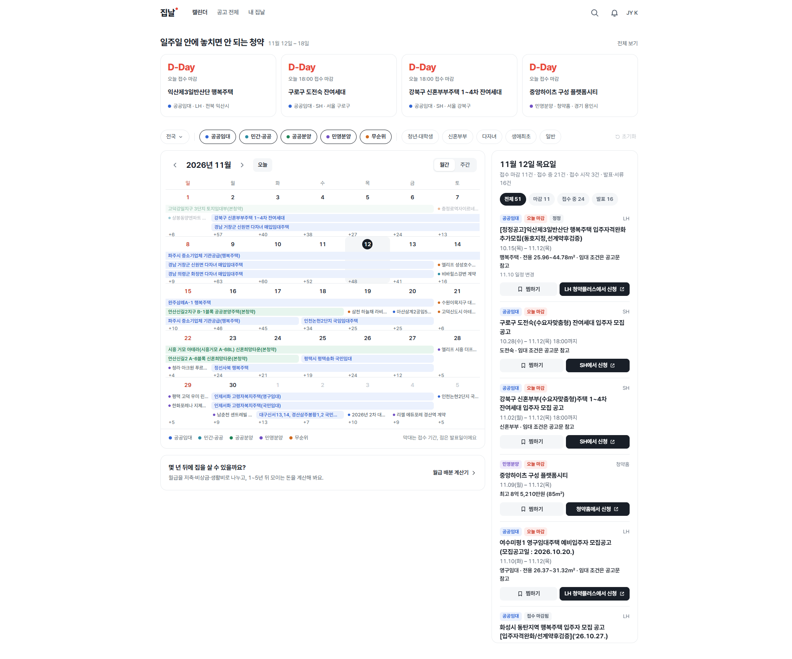

집날 (Zipnal)
집날 — 흩어진 청약 공고를 한 달력에 모은 웹 서비스
청약홈·LH·SH·GH·서울시 청년안심주택 공고를 하루 두 번 자동으로 모아 월간·주간 캘린더로 보여 주는 웹 서비스입니다. 기획부터 배포·운영까지 혼자 만들었고, 찜·웹 푸시 알림·.ics 내보내기를 지원합니다.
1. 프로젝트 개요
청약 공고를 확인하려면 LH·청약홈·SH·GH 사이트를 하나씩 돌아다녀야 했습니다. 공고는 기관마다 흩어져 있고 대부분 게시판 목록이나 PDF로 올라와 접수일과 마감일을 한눈에 보기 어렵습니다. 접수 기간도 2~3일로 짧아 놓치기 쉽습니다. 이 불편을 직접 해결하려고 만들었습니다.
- 사용자 — 청년매입임대·행복주택·청년안심주택을 찾는 사회초년생, 신혼희망타운·공공분양을 준비하는 신혼부부
- 사용 흐름 — 지역과 공급 대상으로 걸러 이번 달 일정을 확인하고, 관심 공고를 찜하면 접수 시작일 09:00과 마감 전날 18:00에 웹 푸시를 받습니다.
2. 시스템 아키텍처
수집 배치, 웹 서버, 알림 배치가 SQLite 파일 하나를 함께 씁니다. 자체 서버에서 systemd 서비스·타이머로 돌리고, 외부 공개는 Cloudflare Tunnel로 합니다.
- 수집 — systemd 타이머(매일 01:00·12:00)가 수집 스크립트를 실행합니다. 공공데이터포털 API와 기관 누리집 HTML/JSON에서 공고를 가져와 정규화하고, 정정·취소 여부를 비교하고, 카카오 로컬 API로 좌표와 가까운 역을 채운 뒤 SQLite에 한 트랜잭션으로 저장합니다.
- 조회 — 브라우저 → Cloudflare Tunnel → Next.js 서버(API 라우트) → SQLite. 서버는 수집기가 새로 쓴 뒤에만 DB를 다시 읽습니다.
- 알림 — systemd 타이머(09:00·18:00) → 푸시 스크립트 → Web Push → 브라우저 서비스 워커
-
장애 감지 — 유닛이 실패하면
OnFailure=로 텔레그램 봇이 알려 줍니다.
flowchart LR
subgraph Sources["공고 출처"]
API["공공데이터포털 API
청약홈 · LH · 특일정보"]
WEB["누리집 HTML/JSON
SH · GH · 청년안심주택"]
end
T1["systemd timer
01:00 · 12:00"] --> C["scripts/collect.ts
수집 · 정규화 · 정정 비교"]
API --> C
WEB --> C
C <--> K["카카오 로컬 API
좌표 · 가까운 역"]
C --> DB[("SQLite
data/zipnal.db")]
C -. 실패 .-> TG["텔레그램 알림"]
U["브라우저 / PWA"] --> CF["Cloudflare Tunnel"] --> N["Next.js 서버
App Router · API Routes"]
N <--> DB
N <--> G["Google OAuth"]
T2["systemd timer
09:00 · 18:00"] --> P["scripts/push.ts"]
P <--> DB
P --> WP["Web Push"] --> U
▲ 수집 배치 · 웹 서버 · 알림 배치가 SQLite 하나를 공유하는 구조
3. 주요 기능 및 화면

▲ 메인 화면 — 마감 임박 D-Day 카드, 유형·대상 필터, 월간 캘린더, 날짜별 공고 패널
청약 일정 캘린더 + 필터
접수 기간은 월간·주간 달력에 막대로, 서류제출·발표·계약일은 점으로 표시합니다. 일주일 안에 마감되는 공고는 맨 위 D-Day 카드로 보여 주고, 날짜를 고르면 그날 마감·접수 중·발표 공고를 패널에 나눠 보여 줍니다. 지역·공급 유형·공급 대상 필터는 URL에 남고, 마지막으로 고른 필터를 기기에 기억합니다.
5개 기관 공고 자동 수집
청약홈·LH는 공공데이터포털 API로, 공개 API가 없는 SH·GH·청년안심주택은 게시판 HTML/JSON 본문에서 일정·주소·주택형을 뽑습니다. 정정 공고는 이전 수집 결과와 비교해 바뀐 일정에 "변경됨"을 표시하고, 취소 공고는 원본 공고까지 취소로 묶습니다.
상세 · 찜 · 알림 · 내보내기
상세 모달에서 세부 일정, 주택형별 공급 정보, 카카오맵 위치, 반경 1.5km 안의 지하철역을 보여 줍니다. 구글 로그인 후 찜하면 접수 시작일·마감 전날에 웹 푸시를 보내고, 찜한 공고는 .ics 파일로 내려받아 내 캘린더에 넣을 수 있습니다.
월급 배분 계산기
내 집 마련 준비에 곁들인 작은 계산기입니다. 세후 월급에서 대출 상환액을 뺀 뒤 저축·비상금·문화비·생활비로 나누고, 1~5년 뒤 모이는 원금을 보여 줍니다. 메인 화면 아래 "몇 년 뒤에 집을 살 수 있을까요?" 카드에서 들어갑니다.
4. 핵심 로직: API가 없는 SH 공고 본문에서 일정 추출
SH 임대 공고는 공개 API가 없고, 본문 형식도 공고마다 다릅니다("■ 접수기간", "○ 인터넷접수", "[1순위]", 표 형식 등). 그래서 본문 HTML을 줄 단위로 나눈 뒤 각 줄을 다음 규칙으로 읽습니다. GH 매입임대 공고도 같은 방식을 씁니다.
- 날짜 앞 글자를 머리말로 보고 정규식으로 접수 / 서류제출 / 서류심사 발표 / 당첨자 발표 / 계약으로 분류합니다.
- 날짜만 있는 표 칸은 바로 위 소제목을 머리말로 씁니다.
※주의 문구와 공고일에서 너무 먼 날짜(접수는 120일, 그 밖은 1년 초과)는 버립니다.- 접수 줄이 여럿이면(1순위·2순위, 인터넷·방문) 가장 이른 시작일부터 가장 늦은 마감일까지로 합칩니다.
- 일정을 읽지 못한 공고는 잘못된 데이터를 넣지 않도록 저장하지 않고, 로그에 글 번호를 남깁니다.
flowchart TD A["목록 HTML
모집공고만 필터"] --> B{"결과·발표·연기 안내,
청년안심주택인가?"} B -- 예 --> X["제외"] B -- 아니오 --> C["상세 HTML → 본문 줄 배열"] C --> D{"줄에 날짜가 있나?"} D -- 없음 --> E["머리말 후보로 기억
(청약일정 소제목이면 접수 구간 시작)"] D -- 있음 --> F{"※ 주의 문구?"} F -- 예 --> X2["건너뜀"] F -- 아니오 --> G["날짜 앞 글자로 분류
접수 · 서류제출 · 발표 · 계약"] G --> H{"공고일 기준
범위 안인가?"} H -- 아니오 --> X2 H -- 예 --> I["접수는 최소 시작~최대 끝으로 병합
같은 종류 일정도 병합"] I --> J{"접수 일정이 있나?"} J -- 없음 --> L["저장 안 함 · 로그에 seq 남김"] J -- 있음 --> K["StoredNotice로 정규화 → SQLite"]
▲ SH 공고 본문 일정 추출 흐름
src/lib/server/collect/sh.ts —
parseShBody 일부
lines.forEach((line, i) => {
const at = line.search(DATE_AT);
if (/^[■□]/.test(line)) inApply = false;
if (at < 0) {
if (/(?:청약|접수|신청)\s*일정|^■\s*접수일/.test(line)) inApply = true;
lastLabel = line;
lastLabelAt = i;
return;
}
if (/^※/.test(line)) return;
const label = line.slice(0, at).replace(/[■□○◆●▶※\-·:：[\]~\s]+$/g, '').replace(/^[■□○◆●▶※\-~\s]+/, '');
let kind: Kind | null;
if (/[가-힣]/.test(label)) kind = classify(label) ?? (inApply && label.length <= 20 && !SKIP.test(label) ? 'apply' : null);
else if (inApply) kind = 'apply';
else kind = i - lastLabelAt <= 3 && lastLabel.length <= 25 && /접수|청약|신청|발표|제출|계약/.test(lastLabel) ? classify(lastLabel) : null;
if (!kind) return;
const { dates, endTime } = readKoDates(line.slice(at), year);
// … 공고일 기준 범위 밖 날짜는 버리고 applies / others에 모음
});5. 데이터베이스 설계 (ERD)
Node 내장 node:sqlite로 SQLite 파일 하나를 씁니다. 공고·일정·주택형과
사용자·세션·찜·푸시 구독을 나눠 저장합니다.
erDiagram
housing_notice ||--o{ subscription_schedule : "has"
housing_notice ||--o{ housing_type_detail : "has"
app_user ||--o{ user_session : "has"
app_user ||--o{ user_bookmark : "has"
app_user ||--o{ push_subscription : "has"
housing_notice |o..o{ user_bookmark : "notice_id (FK 없음)"
housing_notice {
TEXT id PK
TEXT provider
TEXT supply_type
TEXT sido
TEXT apply_start
TEXT apply_end
INTEGER is_corrected
}
subscription_schedule {
INTEGER id PK
TEXT notice_id FK
TEXT schedule_type
TEXT start_date
TEXT end_date
}
housing_type_detail {
INTEGER id PK
TEXT notice_id FK
TEXT type_name
REAL exclusive_area
INTEGER deposit_price
}
app_user {
INTEGER id PK
TEXT provider
TEXT provider_user_id
}
user_session {
TEXT id PK
INTEGER user_id FK
TEXT expires_at
}
user_bookmark {
INTEGER id PK
INTEGER user_id FK
TEXT notice_id
INTEGER notification_enabled
}
push_subscription {
INTEGER id PK
INTEGER user_id FK
TEXT endpoint
}
▲ 주요 테이블 관계 (이 밖에 notification_log, source_state, meta 테이블이 있습니다)
설계 포인트
- DB 서버 없이 SQLite 파일 하나로 — 처음에는 Supabase를 염두에 두고 JSON 파일로 시작했습니다. 저장하는 개인정보가 구글 계정 번호와 이름 정도이고 소규모 운영이라, 별도 DB 서버 없이 SQLite로 단순화했습니다. 기존 JSON 데이터는 처음 열 때 자동으로 옮겨집니다.
-
찜은 지워지지 않게 — 수집할 때마다 지난 공고가 정리되므로
user_bookmark.notice_id에는 일부러 외래 키를 걸지 않았습니다. -
중복 알림 방지 —
notification_log의 기본 키를 (user_id, notice_id, kind, day)로 잡아 같은 알림이 두 번 나가지 않습니다. -
세션 토큰은 해시로 저장 —
user_session.id에는 토큰 원문 대신 SHA-256 해시를 저장합니다. -
마이그레이션 — 스키마 버전은
PRAGMA user_version으로 관리합니다.
6. 기술 스택 (Tech Stack)
Frontend
Next.js 16 (App Router) React 19 TypeScript Tailwind CSS 4 PWA (Service Worker) Kakao Maps SDKBackend
Next.js Route Handlers Node.js 배치 (tsx) Google OAuth 2.0 (OIDC) web-push (VAPID)Database
SQLite (node:sqlite) 일 1회 백업 · 7일 보관Infra · Test
systemd service / timer Cloudflare Tunnel Telegram Bot API Vitest Playwright axe-core외부 API: 공공데이터포털(청약홈 분양정보, LH 분양임대공고, 한국천문연구원 특일 정보), 카카오 로컬 REST API, Telegram Bot API
7. 안정적인 운영을 위한 설계
운영 중에 실제로 겪은 장애가 아니라, 장애가 나도 서비스가 버티도록 미리 설계한 부분입니다. 문제 → 원인 → 해결 → 결과 순서로 정리했습니다.
-
한 기관의 수집 실패가 전체에 번지지 않게
문제5개 기관을 한 배치로 수집하므로, 외부 사이트나 API 하나만 실패해도 그 기관 공고가 빠지거나 실패를 모르고 지나갈 수 있습니다.원인기관마다 출처(공공 API, 게시판 HTML)가 달라 각각 따로 실패할 수 있습니다.해결기관별로 실패를 분리해, 실패한 기관은 이전에 수집한 공고와 마지막 성공 시각을 그대로 둡니다. 종료 코드를 0(전부 성공) / 3(일부 실패) / 1(전부 실패) / 2(인증키 없음)로 나누고, 0이 아니면 systemdOnFailure=로 텔레그램 알림을 보냅니다. 화면에는 마지막 성공 후 13시간이 지나면 "수집이 늦어지고 있어요" 안내 띠를 띄웁니다.결과일부 기관이 실패해도 화면의 데이터가 비지 않고, 실패는 텔레그램으로 바로 알 수 있습니다. -
빌드가 실패해도 운영 서버는 그대로
문제운영 서버와 같은 폴더에 빌드하면, 빌드가 실패하거나 도중에 끊겼을 때 서버가 깨질 수 있습니다.원인Next.js는 빌드 결과물 안에 빌드 폴더 이름이 박혀 있어서, 다른 폴더에 빌드한 뒤 이름만 바꿔 맞바꿀 수 없습니다.해결.next-a/.next-b두 슬롯을 번갈아 씁니다. 서버가 쓰지 않는 슬롯에서 단위 테스트와 빌드를 하고, 성공하면 설정 파일의 빌드 경로만 바꿔 재시작합니다. 30초 안에 응답이 없으면 이전 슬롯으로 자동 롤백하고,flock으로 동시 배포를 막습니다.결과빌드가 실패해도 서버는 이전 빌드로 계속 돌아가고,--rollback한 줄로 직전 빌드로 되돌릴 수 있습니다.
8. 수치로 보는 프로젝트
- 공고 362건(청약홈 168 · LH 127 · 청년안심주택 44 · SH 17 · GH 6), 세부 일정 1,305건, 주택형 983건 — 로컬 DB 조회 시점 기준
- 단위 테스트 264개 / 16개 파일 (Vitest)
- e2e 테스트 3개 파일(Playwright): 캘린더 동작, 접근성(axe) 검사, 월급 계산기 — 360px 화면에서 가로 스크롤 없음, 키보드로 날짜 이동 등 확인
- TypeScript/TSX 약 11,500줄
9. 회고 및 개선할 점
- LH 임대보증금·월임대료는 별도 공급정보 API(활용신청 필요)에 있어 아직 수집하지 못합니다.
- GH 선착순 접수 공고와 운영기관이 모집하는 특화형 매입임대는 페이지에 일정이 없어 저장하지 못합니다.
- 공휴일 특일 정보 API는 활용신청 전이라, 코드에 넣어 둔 기본값(2026–2027)을 씁니다.
- 새 수집처를 추가할 때 웹을 먼저 배포하지 않으면 화면이 깨질 수 있습니다. 배포 순서에 의존하지 않는 구조로 바꾸고 싶습니다.
- 로그인은 구글만 지원합니다. 제공자를 늘릴 수 있는 구조로 만들어 두었습니다.
- 다크 모드는 MVP 범위에서 뺐습니다.
- 커밋을 기능 단위로 나누지 않아 변경 이력을 따라가기 어렵습니다. 다음 프로젝트에서는 기능 단위로 커밋하겠습니다.
Project Info
-
Category
웹 앱 (반응형 웹 + PWA, 수집 배치 포함) -
Role
1인 개발 (기획 · 개발 · 배포 · 운영)
AI 코딩 도구 활용 -
Period
2026.10.26 – 2026.11.02 (약 1주) -
GitHub
비공개 저장소 -
Deployment
사이트 방문하기